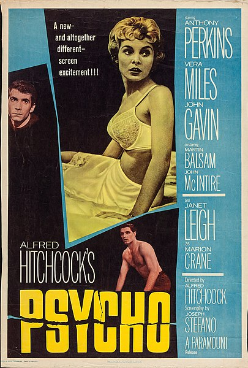
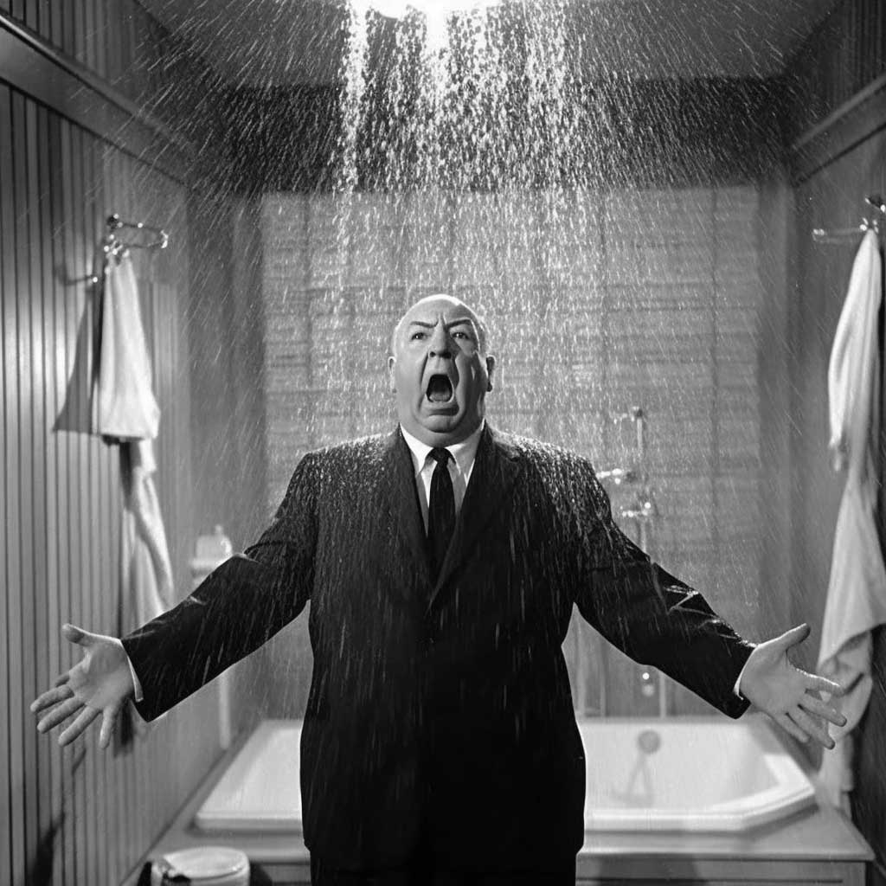

Psycho: Bir Gerilim Klasiği
Alfred Hitchcock'un yönettiği Psycho, sinema tarihinin en ikonik gerilim filmlerinden biridir. Film, Marion Crane'in çaldığı parayla kaçarken Bates Motel'e sığınmasıyla başlar.
- Yönetmen: Alfred Hitchcock
- Başrol: Anthony Perkins, Janet Leigh
- Yıl: 1960

Daha fazla bilgi için IMDB sayfasına göz atabilirsiniz.
Psycho'nun Etkisi
Psycho, gerilim ve korku türlerinde birçok filme ilham kaynağı olmuştur. Özellikle duş sahnesi, sinema tarihinde unutulmaz bir yer edinmiştir.
- Gerilim türüne katkıları
- Sinema tekniklerindeki yenilikler
- Kültürel etkileri

İlgili makaleyi buradan okuyabilirsiniz.
Psycho'nun Mirası
Psycho, sadece bir film değil, aynı zamanda bir kültürel fenomen haline gelmiştir. Norman Bates karakteri, sinema tarihinin en unutulmaz karakterlerinden biridir.
- Norman Bates karakteri
- Film müziği
- Devam filmleri ve yeniden yapımlar